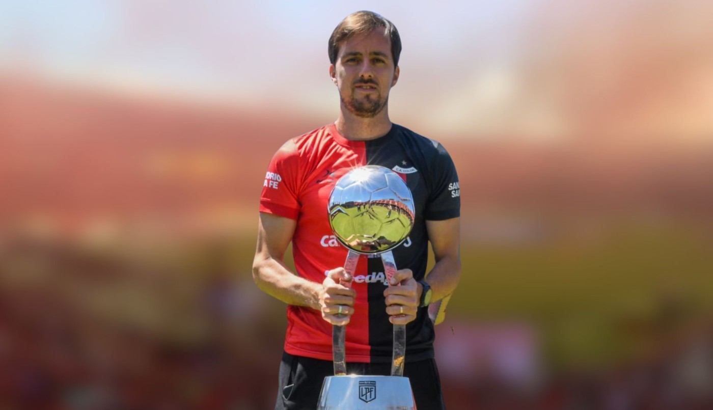
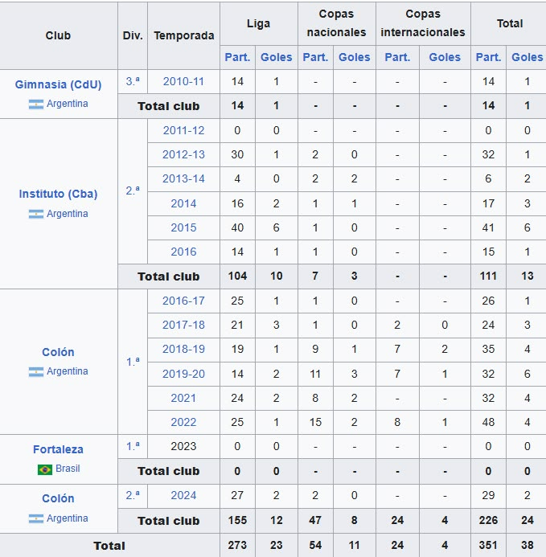

Cristian Bernardi

Su Trayectoria
Christian Bernardi (Córdoba, Provincia de Córdoba, Argentina; 10 de marzo de 1990) es un futbolista argentino. Juega de centrocampista y actualmente se desempeña en Atlanta de la Primera B Nacional.
Gimnasia de Concepción del Uruguay
En 2008 comenzó su carrera como futbolista realizando las inferiores en Instituto de Córdoba, donde se mantuvo hasta fines de 2010, cuando fue incorporado a Gimnasia de Entre Ríos para disputar el Torneo Argentino A.
Instituto
En 2012 volvió para jugar en la gloria, primero paso por las divisiones inferiores hasta que Darío Franco lo incorporó al plantel de primera, decisión que de no haberse concretado el volante evaluaba dejar el fútbol.
Colon
En julio de 2016 fue adquirido por Colón, el conjunto santafesino pagó $1.500.000 por el 50% del pase del jugador[3][4] debutando en la Primera División de Argentina en el Campeonato 2016-17
En el club de Santa Fe jugó 197 partidos y marcó 22 goles, siendo especialmente recordada su participación en la consagración en la Copa de la Liga 2021, primer título nacional del club.
Fortaleza
A fines de 2022 Fortaleza EC de la Serie A de Brasil anunció que desembolsaría $1.500.000 dólares para liberar a Bernardi de Colón y así sumarse a las filas del equipo cearense, lo que sería la primera experiencia del jugador en el exterior
Sin embargo, todo esto se vería truncado producto de la detección de secuelas de la enfermedad del Covid-19 en el organismo del jugador. A raíz de esta situación de salud, Bernardi quedaría en libertad de acción y estuvo todo el 2023 fuera de las canchas de juego.
Retorno a Colon
Para el año 2024, luego del descenso de Colón a la segunda categoría del fútbol nacional, Bernardi regresó a Santa Fe para un segundo ciclo en el club. Luego de 467 días del final de su primera etapa, su nuevo debut oficial se dio el 3 de febrero ante CADU en la primera fecha de la Primera Nacional 2024
Estadisticas
